Phần 2
Chiến sĩ liên lạc nhỏ tuổi
Phần 1: Cậu bé canh gác và con lợn của đồn trưởng

Gió núi Pú Nhung thổi ràn rạt qua những tán cây. Năm ấy Vừ A Dính chưa đầy 13 tuổi nhưng đã rắn rỏi như cây lim, cây sến giữa rừng.

Hôm đó, Dính đang đứng gác trên mỏm đá cao thì nghe tiếng động lạ. Không phải từ phía Tuần Giáo, mà là từ hướng rừng Bản Chăn. Những bóng áo lính Pháp thấp thoáng sau màn lá.

Dính nheo mắt, nhận ra ngay nguy hiểm. Cậu bé lao vụt về bản, vừa chạy vừa hét lớn, tiếng vang vọng cả núi rừng:
"Có Tây! Có thằng Tây! Bà con ơi, chạy nhanh lên!"

Dân bản nháo nhào thu dọn đồ đạc chạy vào rừng. Dính không chạy ngay, cậu tạt qua nhà xem mẹ và các em đã an toàn chưa.

Nhưng không kịp nữa, một toán lính Pháp sồ tới, súng lăm lăm trên tay. Chúng vây lấy cậu bé nhỏ thó.

Tên chỉ huy hất hàm, ra lệnh cho lính bắt Dính đi theo làm phu. Hắn chỉ vào cái rọ lợn to tướng đang để bên đường:
"Mày! Cõng cái này về đồn cho tao!"

Dính cắn răng, ghé vai cõng con lợn nặng trịch. Mồ hôi vã ra như tắm, nhưng đôi mắt cậu bé cứ đảo liên hồi tìm cách thoát.

Đến một con dốc đứng cạnh bờ suối, Dính nảy ra một ý. Cậu giả vờ trượt chân.
"Á!"
Cả người cả rọ lợn lăn lông lốc xuống dốc. Rầm! Dính va vào một cây gỗ chặn ngang, còn cái rọ lợn bung ra, con lợn éc lên một tiếng rồi chạy biến vào rừng sâu.
Tên đồn trưởng Pháp mặt đỏ gay, chạy xuống túm lấy cổ áo Dính, gầm lên:
"Thằng nhãi! Mày cố tình thả lợn của tao à?"
"Tao trượt chân!"
Dính ngước mặt lên, trả lời cộc lốc.
"Mất lợn thì mạng mày phải thế! Nhốt nó lại! Sáng mai bắn bỏ!"

Đêm đó, Dính nằm cạnh ông già Vừ Xa.
"Anh à, nằm chờ chết thì uổng lắm. Anh em mình dỡ mái trốn đi."
"Liệu có được không ? Lính gác nhiều lắm."
"Được anh ạ. Trời tối đen thế này, chúng nó lại chủ quan."

Và đêm ấy, hai bóng người nhỏ bé lặng lẽ dỡ mái tranh, trườn qua hệ thống canh gác dày đặc, biến mất vào màn đêm của rừng núi tự do.
Chiến sĩ liên lạc nhỏ tuổi
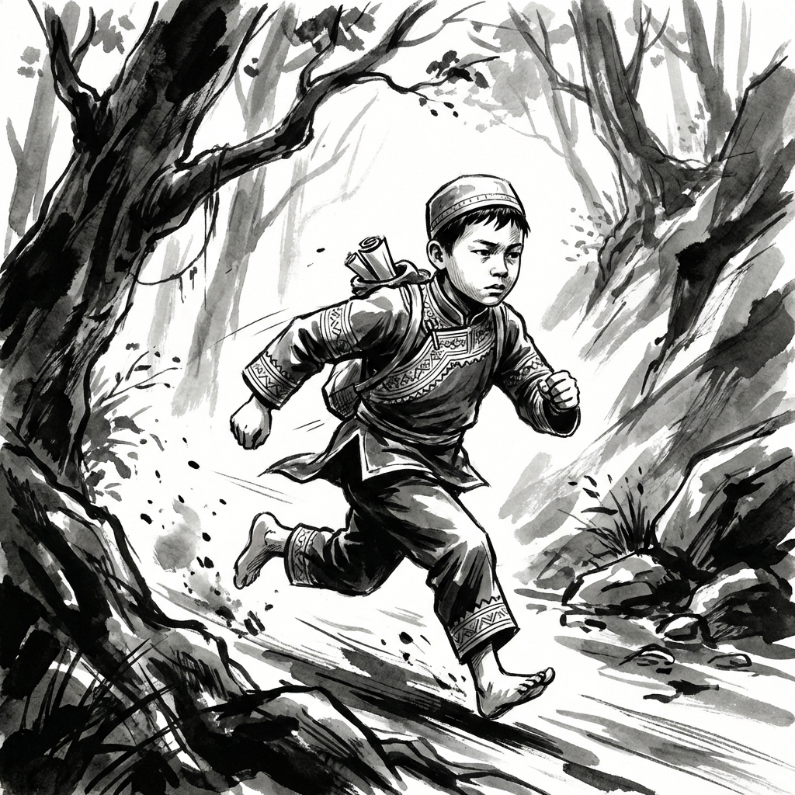
Năm 13 tuổi, Vừ A Dính đã thoát ly gia đình trở thành đội viên liên lạc của đội vũ trang huyện Tuần Giáo.
Đội vũ trang của Dính hoạt động trên một địa bàn rất rộng, từ châu Điện Biên ra châu Tuần Giáo rồi ngược lên châu Tủa Chùa.
Nhiệm vụ chính của Dính là làm giao liên. Lần nào nhận nhiệm vụ đi liên lạc, Dính cũng mưu trí bảo đảm an toàn và về trước thời gian quy định.
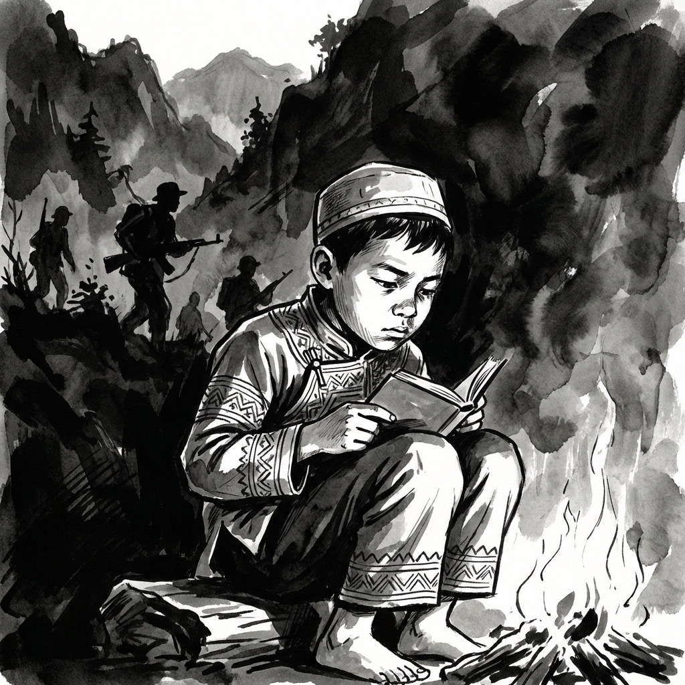
Cuộc sống kháng chiến gian khổ nhưng Vừ A Dính rất lạc quan yêu đời. Dính rất ham học và học khá.
Lúc nào trong ngực áo của Dính cũng nhét cuốn sách để tranh thủ học. Dính đã học đọc và viết chữ thông thạo.
Khuôn mặt tròn, đôi mắt tinh nhanh, chân tay thoăn thoắt là hình ảnh chiến sĩ nhỏ Vừ A Dính hằn sâu trong mắt các chiến sĩ của đội vũ trang Tuần Giáo.
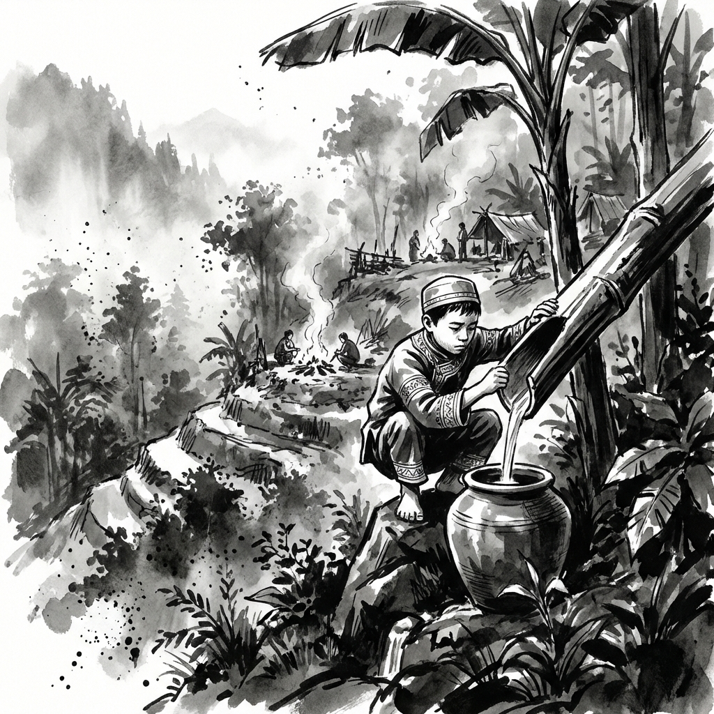
Địch tăng cường lùng sục tìm diệt đội vũ trang nên đơn vị luôn phải di chuyển để giữ bí mật.
Đơn vị thường ở trên các triền núi cao xa nguồn nước. Cuộc sống vô cùng gian khổ, hàng tháng trời không một hạt muối, không một hạt gạo.
Đơn vị của Dính đã có sáng kiến chặt ngang thân cây chuối rồi khoét ruột để lấy nước. Dính được giao phụ trách việc này và làm rất khéo léo.
"Từ nhỏ em trèo núi đi nhanh đã quen chân rồi!"
Dính cười hồn nhiên khi các anh hỏi tại sao cậu luồn rừng giỏi thế.
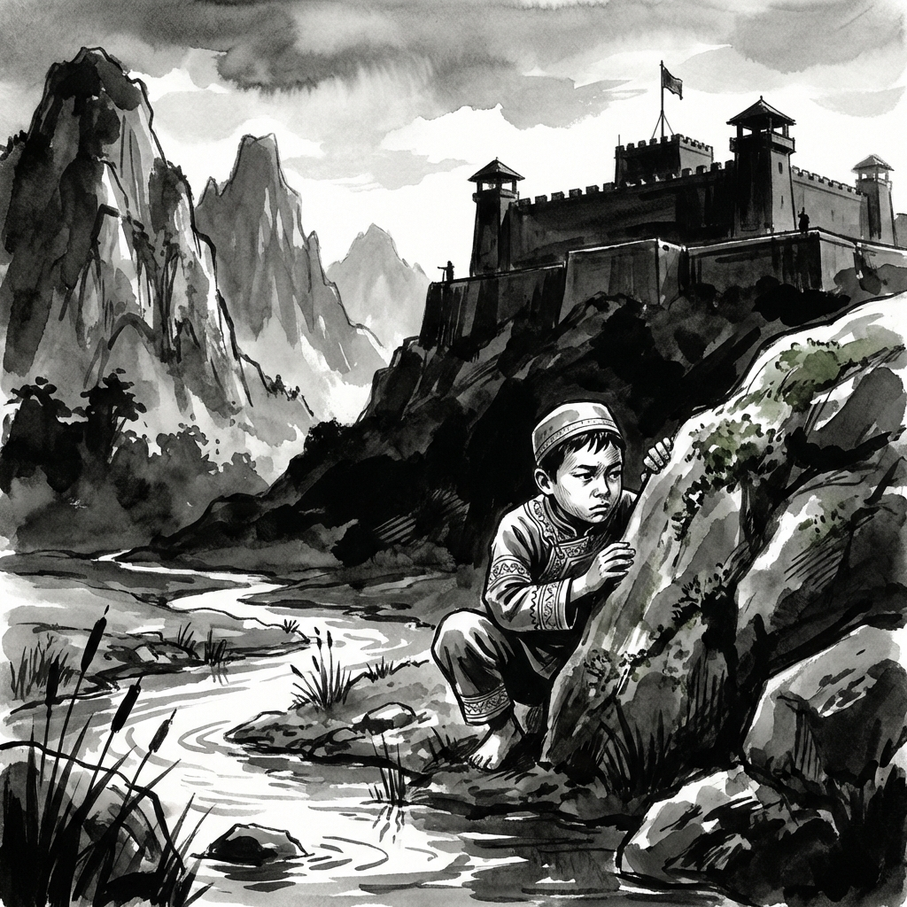
Được tin mẹ và cả nhà bị địch bắt giam tại đồn Bản Chăn, Dính buồn và thương mẹ lắm.
Biết tin đơn vị chuẩn bị đánh đồn Bản Chăn, Dính đã đề nghị được xuống núi điều tra nắm tình hình địch và nhân tiện tìm hiểu tin tức về mẹ.
Dính như con sóc lao xuống núi gặp du kích Bản Chăn, bí mật dẫn ra mỏm núi gần đồn để quan sát.
Mai phục suốt hai ngày đêm, Dính vẫn không thấy những người bị giam ra khỏi trại.
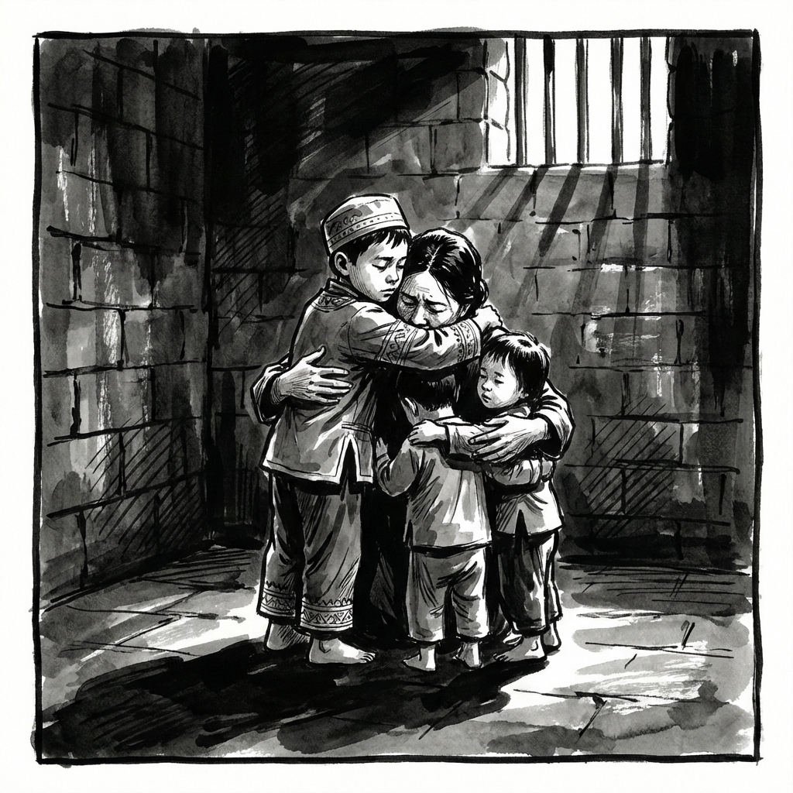
Sáng sớm ngày thứ ba, Dính đã bí mật làm ống bương đựng nước rồi nấp sau một tảng đá sát bên mép suối.
Khi đám người bị bắt giam được lính đồn dẫn ra suối lấy nước, Dính đã nhanh chóng trà trộn vào mà địch không hề phát hiện ra.
Đêm ấy, Dính đã được nằm cạnh mẹ và các em. Mẹ đã cung cấp nhiều tin tức quan trọng cho Dính về đồn Bản Chăn.
"Mẹ và các em đừng khai báo chỗ ở của cơ sở cách mạng!"
Dính còn động viên và căn dặn mẹ như vậy trước khi chia tay.
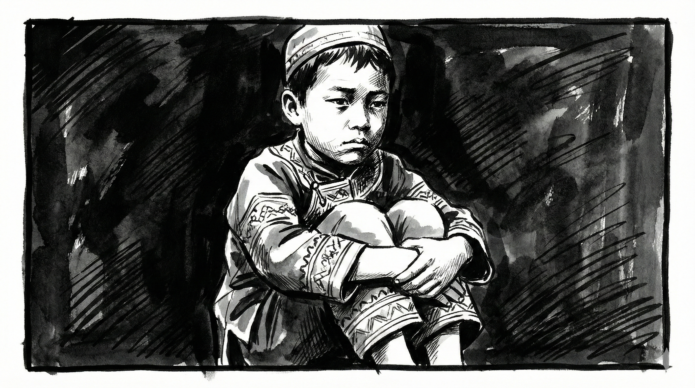
Trở về đơn vị, Dính đã báo cáo tỉ mỉ và vẽ lại sơ đồ từng vị trí bố phòng của địch.
Các anh chỉ huy thấy nguy hiểm đã không cho Dính vào trong đồn địch nữa mà chỉ liên lạc với mẹ ở bên ngoài.
Và lần gặp sau đó của mẹ và Dính bên bờ suối là lần gặp cuối cùng.
Mẹ Sùng Thị Plây của Dính đã bị giặc bắn ngay sau buổi gặp, báo tin cho Dính trở về trại giam cùng với 22 người khác.
Hy sinh hóa bất tử
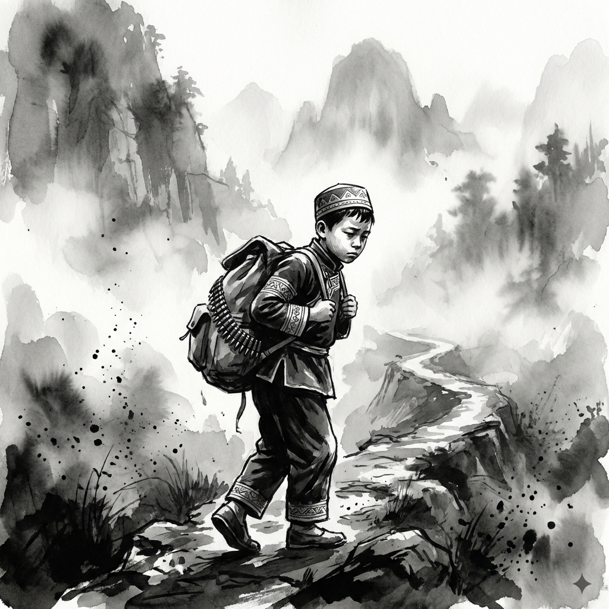
Tháng 6 năm 1949, giặc Pháp huy động tổng lực quân lính từ các đồn trong khu vực để vây ráp hòng tiêu diệt đội vũ trang Tuần Giáo.
Gần 1.000 quân đổ về căn cứ Pú Nhung từ nhiều ngả đường.
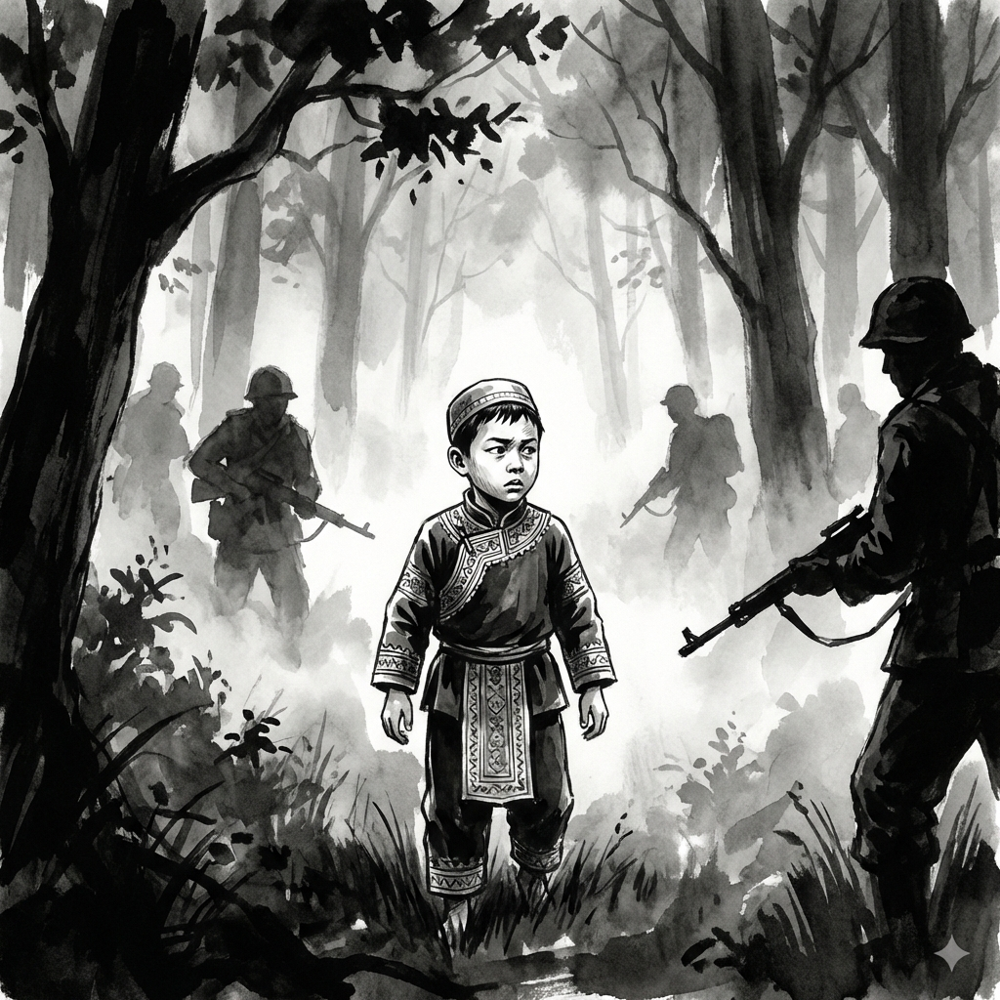
Hôm ấy trời mù sương, chỉ cách nhau vài bước chân mà không nhìn thấy nhau.
Dính vừa bí mật gặp mẹ trở về, sau lưng còn đeo trong bọc cả trăm viên đạn mà mẹ mới trao cho.
Vì trời giăng sương mù mịt nên rất khó quan sát, Dính bất ngờ rơi vào ổ phục kích của giặc mà không hay biết.
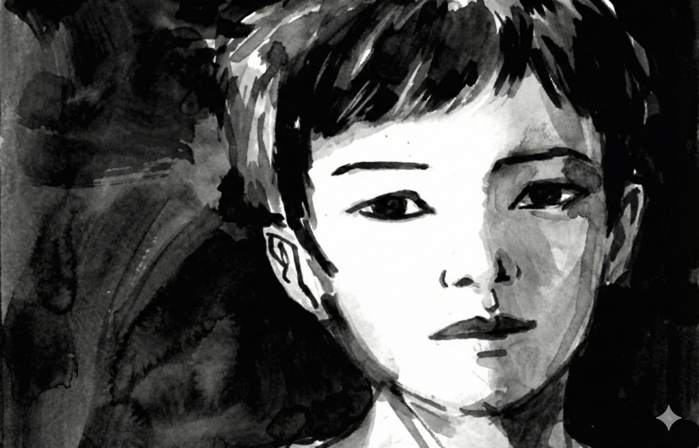
Thằng đội Tây biết đây là một liên lạc cho du kích, y mừng ra mặt rồi hỏi Dính:
"Các ông Tỉnh ở đâu?"
"Không biết."
Dính bình tĩnh trả lời.
"Cái bao đạn này mày mang về cho ông Tỉnh bắn chúng tao mà mày không biết à? Nói đi! Không tao bắn vỡ đầu mày bây giờ!"
"Không biết."
Dính vẫn trả lời.
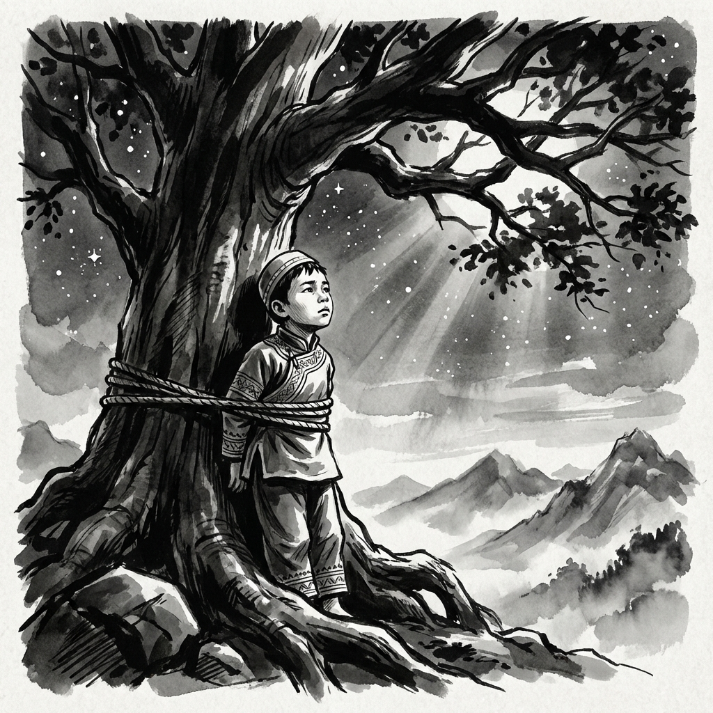
Tên đội Tây không giữ được bình tĩnh, xông vào đánh Dính túi bụi. Lũ giặc thay nhau đánh đập dã man Dính đến tận trưa.
Đánh chán thì địch lại hỏi, Dính vẫn chỉ trả lời hai từ "không biết".
Một tên lính ác ôn đã cầm báng súng đánh gãy một bên ống chân của Dính.
Mặt tím bầm, môi sưng vù, chân bị gãy vô cùng đau đớn nhưng Dính cắn răng, nước mắt giàn giụa, miệng không hé một lời nào.
Đêm ấy, giặc trói Dính dưới một gốc đào giữa sương khuya lạnh buốt.
Hôm sau rồi đêm sau nữa, giặc tiếp tục tra tấn và bỏ đói, bỏ khát Dính giữa rừng.
Sự gan dạ của Vừ A Dính đã làm run sợ nhiều tên lính ngụy.
Sáng ngày thứ ba, tên đội Tây đến trước mặt Dính dụ dỗ:
"Tao sẽ cho băng thuốc chữa chân gãy cho mày, cho mày ăn uống tử tế và thưởng nhiều tiền nữa. Nói đi, ông Tỉnh ở đâu?"
Dính vẫn trơ như đá, không hé răng nửa lời. Thằng đội Tây gầm lên khi không khuất phục được một thằng bé, hắn hầm hầm bỏ đi.
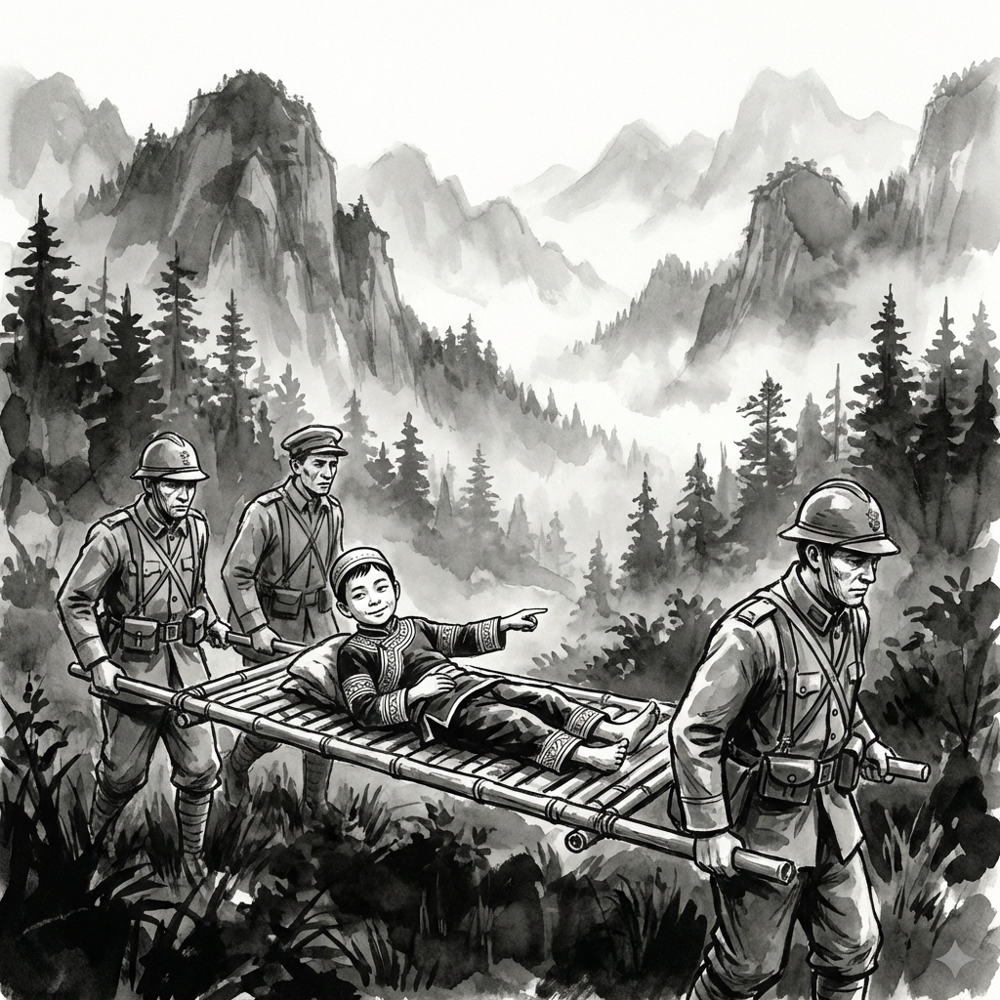
Những người Thái, người Mông, người Xá bị địch bắt đi ngang qua nhìn thấy cảnh tượng của Dính ai cũng rớm nước mắt.
Gặp người quen, Dính vội nhắn bằng tiếng Mông:
"Cái túi tài liệu tôi giấu trong rừng, nhắn các anh ra lấy về."
Biết mình khó qua khỏi bàn tay tàn ác của kẻ thù, sáng hôm sau Dính vờ gật đầu:
"Biết, biết..."
"Làm cáng cho tao!"
Dính nói với tên đội Tây. Ròng rã một ngày trời, Dính bắt bọn giặc khiêng mình đi hết ngọn núi này sang khu rừng khác nhưng vẫn chưa chịu chỉ vị trí đóng quân của bộ đội.
Loanh quanh đến chiều tối, Dính lại dẫn chúng trở về nơi xuất phát ban đầu.
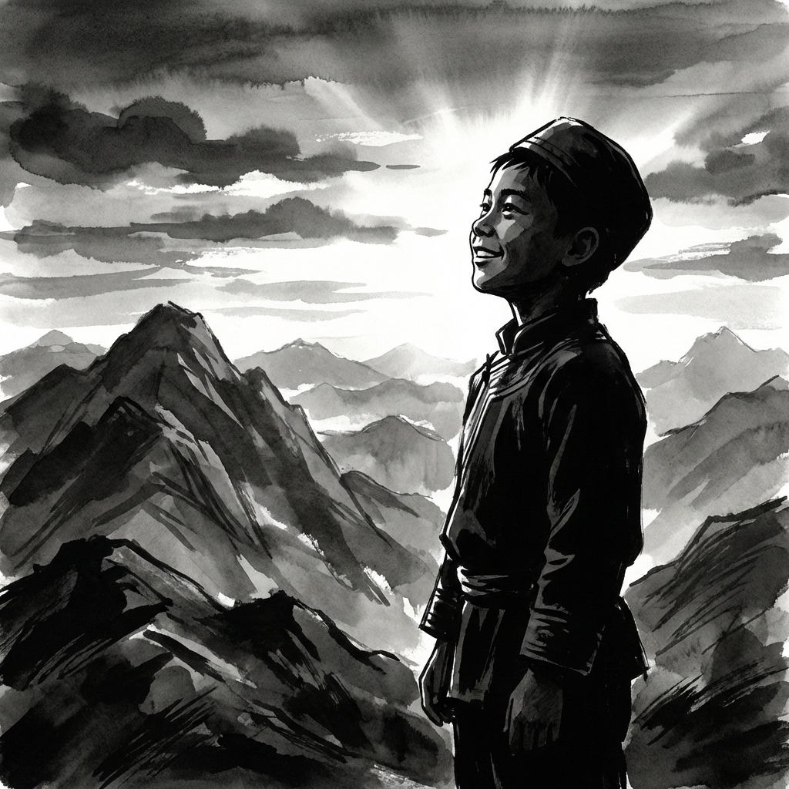
Vừ A Dính ngước nhìn bầu trời với núi rừng quê hương, mỉm cười.
Biết bị lừa, thằng đội Tây gầm lên, nó xả cả một băng đạn vào ngực Vừ A Dính. Sau đó nó sai treo xác cậu lên cây đào cổ thụ.
Hôm ấy là chiều tối ngày 15 tháng 6 năm 1949, Vừ A Dính đã anh dũng hy sinh bên gốc cây đào cổ thụ ở Khe Trúc gần đồn Bản Chăn khi chưa tròn 15 tuổi.
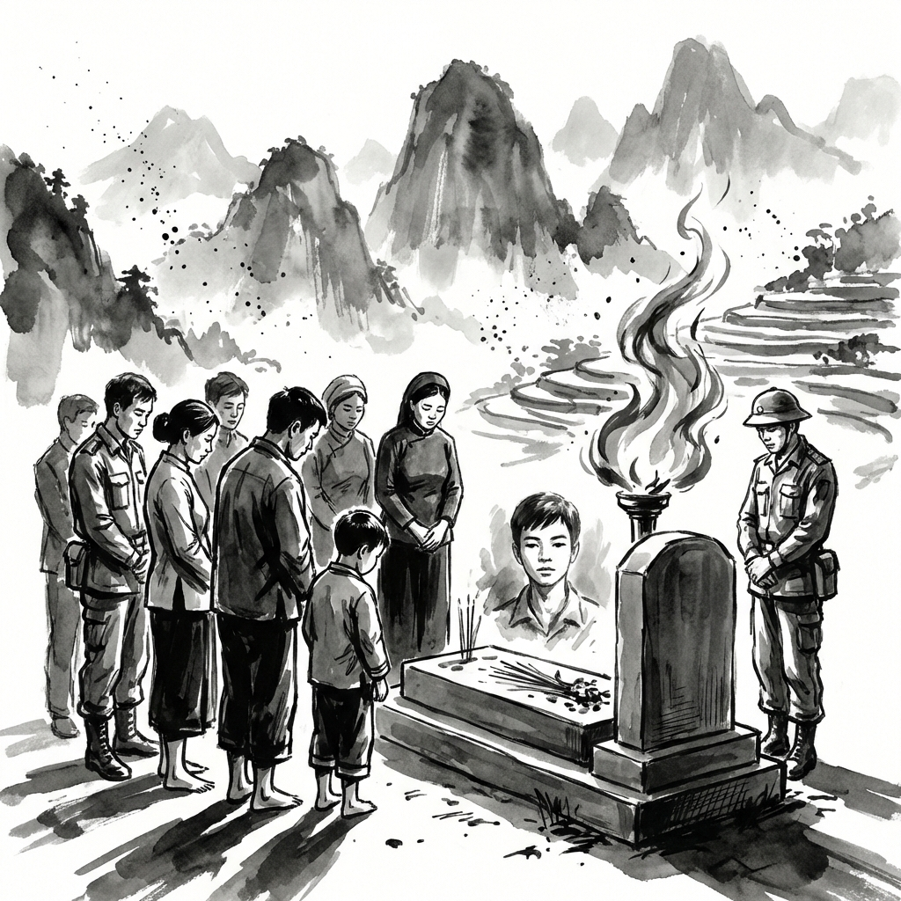
Ngay cái đêm Vừ A Dính hy sinh, chứng kiến cái chết hiên ngang anh dũng, hơn 10 tên lính ngụy đã bỏ trốn khỏi hàng ngũ của địch.
Bên bếp lửa hồng trong các gia đình người Mông, người Xá, người Thái khắp vùng Tây Bắc, người ta tự hào kể cho con cháu nghe về tấm gương hy sinh bất khuất của cậu bé người Mông ở Pú Nhung.
Năm 1952, Chính phủ đã truy tặng Huân chương Quân công hạng Ba cho Vừ A Dính.
Tháng 3 năm 1999, Ban Bí thư Trung ương Đoàn đã ra quyết định thành lập Quỹ học bổng Vừ A Dính dành cho học sinh, sinh viên dân tộc thiểu số cả nước.
Ngày mùng 8 tháng 11 năm 2000, Chủ tịch nước Cộng hòa Xã hội Chủ nghĩa Việt Nam đã truy tặng danh hiệu Anh hùng Lực lượng vũ trang nhân dân cho Vừ A Dính.